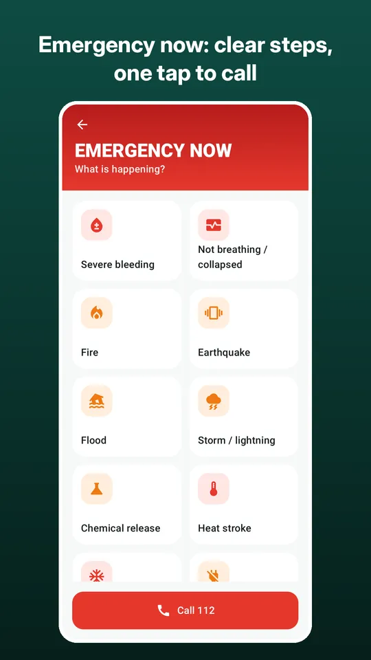

ATTA Aid
Guía de primeros auxilios y supervivencia sin conexión, con SOS y un chat que funciona sin internet, de teléfono a teléfono.
Próximamente en Google PlayÚnete a los testersEmpieza la prueba cerrada en Google Play. Únete al grupo de testers y te enviaremos el enlace de la prueba.
Qué incluye
- Guía de primeros auxilios y supervivencia sin conexiónGuías paso a paso basadas en fuentes oficiales públicas (Ready.gov, FEMA, CDC). Funciona sin conexión.
- Números de emergencia por paísLos números correctos para donde estés, llamada con un toque.
- SOS a personas cercanasEnvía un SOS —con tu ubicación si quieres— y elige quién lo recibe: todos los cercanos, tu grupo o una persona.
- Chat cercano sin internetLos teléfonos se conectan por Bluetooth y Wi-Fi y se reenvían los mensajes. Sin SIM, sin red y sin hardware adicional.
- Mensajes privados con cifrado de extremo a extremoSolo el destinatario puede leer tus mensajes directos. Compara un código de seguridad en persona.
- Grupos cifrados por QRPara profesores y familias: crea un grupo y los demás se unen escaneando un código QR.
- 6 idiomasEnglish, Русский, עברית, Español, Deutsch, Français.
- Sin anuncios, sin pagos, sin cuentaGratis. Nada que comprar ni registrar. Tus datos se quedan en tu teléfono.
Capturas de pantalla




Aviso médico
ATTA Aid es una guía educativa, no un dispositivo médico. No diagnostica ni trata y no sustituye a los servicios de emergencia ni a la atención médica profesional. En una emergencia, llama primero a tu número de emergencia local (por ejemplo 112, 911 o 101 en Israel). ATTA Aid no está afiliada ni respaldada por Ready.gov, FEMA, CDC ni ninguna otra organización que cite.
Privacidad y contacto
Política de privacidad Eliminar tus datos Contacto: gamerazrabplay@gmail.com